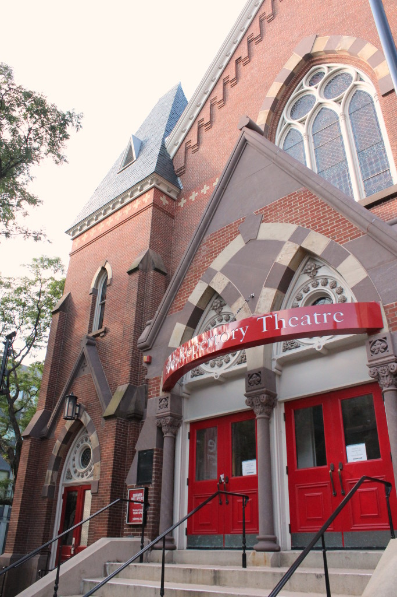

.png)
.PNG)
.PNG)
.PNG)
.PNG)
.PNG)
.JPG)
.JPG)
.PNG)
.PNG)


The main purpose of this road trip was to move our son into his apartment in New Haven, Connecticut as he began law school at Yale. Along the way I have shared with you quaint old towns, wonderful inns, some fun shopping, delicious dining, and an assortment of not-to-be-missed scenery, but today’s post is just a bit different. We left Vermont and drove back to New Haven to add the last few things to his apartment, and we toured the awe-inspiring campus at Yale, camera in hand. Today I want you to just soak in this amazing architecture.

A large portion of the area near our son’s apartment is the campus at Yale. It blends in with the city, or rather the city blends in with it. It is often hard to tell where one starts and the other ends in this part of New Haven.
With three children who have traveled across many states in determining where they want to attend school, we have seen our fair share of campuses, but it is safe to say that none are as impressive as Yale. I thought Duke was close, (and it is beautiful) but after touring Yale, Duke comes in second.

As you can tell from these buildings, Yale is old – very old. Its history began in the 1640s when colonial clergymen originated the idea for the school. It was chartered in 1701 and named Yale College in 1718 after Elihu Yale, a Welsh merchant who donated money, books, and a portrait of King George I. The Yale School of Medicine was chartered in 1810 and the Law School in 1824.
The campus covers 310 acres, and its 260 buildings have architectural styles reflecting every major one that’s been designed in the last 300 years. I know I should have been “hearing” some grand classical piece of music playing in my head as we strolled along looking at these buildings – something immensely academic, but what I was really hearing in my head was this…
Yes, the theme from Harry Potter.
Because to me, it looked straight out of Hogwarts (which technically, could be considered to be academic too. 🙂 ) If we had been there at night, I am sure the similarities would have been even stronger.
Just look at the frieze above this door into the law school. While this one shows the students asleep and the professor engaged, at the other door into this building there is a matching one with the professor exhausted and the students engaged. 🙂
We went inside the Sterling Memorial library and stood in awe. I can’t begin to imagine what it would take to recreate that kind of detail today.
I even liked the bicycles outside it. 🙂
When you walk through Yale, you come out on the other side where there are shops bordering the campus. Across the street, you see this small park sandwiched between two busy roads.
Often times, a market with fresh produce is in the park area, and more places to shop are across that street.
This is the view looking back from that side towards Yale.
There is a wonderful restaurant there on the street level called Maison Mathis.
Our son’s apartment and The Study Hotel (where we were staying) are on Chapel Street, so we spent most of our time on that side of the campus, but one day we happened to drive past Maison Mathis. I loved the looks of it, did a little research, and on our last day in New Haven we had lunch there.
It is owned by two Belgians, so it has a decidedly European vibe. Breakfast is served all day long, and they have some wonderful bakery items along with many other menu choices.
When we return, I want to try the Belgian waffle with chocolate.
Here are a few of their salads and sandwiches.
You take one of the water bottles there to your table self serve.
Cute table and chairs!
And divine looking desserts!
(I should have ordered some to go.)
Here is our son’s coffee and sandwich,
and my ratatouille. It had a good flavor, but I would have liked the veggies cooked a little less so that they were more firm.
My husband’s grilled salmon salad was very good.
I mentioned that we stayed mostly on the Chapel Street side of the campus while we were in New Haven. There are quite a few restaurant choices over there as well. We tried out the vegetarian Claire’s Corner Copia one afternoon. It has been in business serving vegan and organic foods since 1975.
They serve great breakfasts, and Mexican dishes, pizzas, veggie burgers, and a number of other entrees. I had the eggplant parmigiana, and it was quite tasty. Here is a small portion of their menu.
My favorite place to eat in New Haven was on Chapel Street – Shake Shack. We ate there quite a few times – and at all hours of the night! (It was about a 4 minute walk from our son’s apartment making it quite convenient.)
Take a look at all the goodies on the menu!
I couldn’t resist those crinkle cut fries, milkshakes, and concretes. It is a good thing there is not one in our area at home!
Are you hungry now?
🙂
I have one more place for you to see from New Haven in the next post – our son’s finished apartment. Remember..he wanted it “functional not decorated,” so do not expect a lot more than minimal.
I hope to see you back here soon.
Until next time…


.PNG)
Wow Yale is so pretty what great architecture!! and great photography skills. Your posts always make me so hungry;) lol I just try and think of ways to make the same thing at home YUM
———————————————————————
Isn’t the architecture just unbelievable?! (But it really did make me think of Harry Potter. 🙂 ) I am sorry I am making you hungry, but if you can make all the food at home that is great!
Kelly
Those buildings are amazing. Quite the campus! Looks like it has a lot of wonderful eateries too. You had me drooling by the end of this post. Thanks for showing the menus Kelly, as I like to see what makes up the entries. Yum!! 🙂
———————————————————————
It was an amazing campus. I love to read menus too, so I try to include them when I can. It helps to know what to expect when you go to a new restaurant. If you are near a Shake Shack, you should check them out. 🙂
Kelly
Loved, loved. loved this post! Don’t know if you will think this good news or not 🙂 🙂 BUT. . . there is a Shake Shack “near” you – it’s on Peachtree Road in Atlanta just south of the Paces Ferry intersection. Closer to your home than New Haven. You can thank me later! For now, I thank you for your blog – absolutely one of my favorites; I don’t miss an “edition”.
———————————————————————–
Thank you Elaine! I am happy that you loved loved loved it! 🙂 Our son now at Yale graduated from Emory University, and he told me about there being a Shake Shack in Atlanta, but I was not sure of the exact location. Thank you for sharing that with me. (I think. LOL) The next time we go through Atlanta, I hope we can stop there. They are expanding locations, so perhaps we will all have one nearer to us soon.
Thank you for reading the blog!!!!
Kelly
Kelly,
I can’t wait to see what you have done with the son’s apartment.
The Yale campus is soooo beautiful! I wish your son the very best there and I know he must pinch himself to think he has such a wonderful opportunity in front of him.
The Shake Shack looks sooo good.
Dianne
———————————————————————-
Remember our son’s apartment is only one room, so there is not a ton to show…and it’s a guy’s place at that. Yale’s architecture is amazing, isn’t it?! Thank you for the well wishes for our son. He is certainly being challenged there…100 hours of school and school work last week and not a lot of sleep (which is partly why he is coming down with a cold right now I think.) He could probably use something from Shake Shack to make him feel better. 🙂
Kelly
Congratulations to your son! What a gorgeous place to go to school. Your pictures are beautiful. We spent the weekend in and around our son’s college campus in St. Louis. It’s such fun, isn’t it?
———————————————————————-
Thank you for your kind compliments Julie. College life is always exciting and fun for visitors (but a lot of work for the students!) I know you enjoyed visiting your son this weekend. 🙂
Kelly
Oh my I think I gained five pounds just looking at all that food!! Yum. And I picked up a Cottage Home Christmas magazine today and while I was leafing through it there was your pretty house again!! I really liked the pictures in Cottage Home better than the ones in the other magazine…BHandG I believe? Any way…so glad to say I knew you before you were famous!! Congrats.
———————————————————————-
Oh dear! I hope we don’t gain weight by looking! (Because I look a lot!!)
I think you mean Southern Cottage magazine, right? The photographs in that article were done by Layla and Kevin Palmer from The Lettered Cottage about 4 years ago. I was so surprised to see this article come out this year! It was good to see an article that included the exterior for a change. The previous one they ran did not include some of the photos that they included this time. Kevin did a good job with the photography when they were here.
Kelly
I have been enjoying your tour of this part of the country. You take great delight in torturing me with all this food, I can tell, when I am trying so hard to be good! Ah well — your lucky son, going to Yale Law School — he will be a fine lawyer someday, and you can congratulate yourselves on getting him launched. There is a lot of satisfaction in seeing your children do well.
————————————————————————
I’m sorry…I did not mean to torture you. 🙁 I am glad you are trying to be good though. Our son is working hard at Yale, and it is challenging. Yes, there is definitely satisfaction in seeing our children succeed, but I will feel much better when I see him graduate (and he will too! LOL)
Kelly
So enjoying these posts, Kelly. I think my favorite place is that magnificent library. It just exudes a reverence for books and learning. I think I’d feel smarter just standing in there. 🙂
———————————————————————-
It does exude a reverence for anything academic. I know exactly what you mean about feeling smarter just being in there! 🙂 It also makes one feel very small in such a huge space.
Kelly
What a beautiful campus!! You just can’t beat the detailed architecture of the older colleges. I’m sure you enjoyed walking around getting a feel for the place your son will be spending his next few years. 🙂 What woman doesn’t love reading about all the cute cafes and eateries too! Yum, I would have loved the Shake Shack too!! I had never heard of “concretes” though, haha I “googled it. 🙂 And yes, I am hungry. Off to find some lunch. Wish I had something like that grilled salmon salad. 😉
———————————————————————
It was quite beautiful! Although I think the feeling I came away with was “overwhelmed” by the campus.
Shake Shack was worthy of several meals. 🙂 We used to have a restaurant here that made concretes, but they closed a number of years ago. It was good to enjoy the cold treat there in New Haven during their “heat wave.”
Kelly
Wow, Kelly! This post is fabulous! What a gorgeous campus Yale is! You know exactly what angle to use in photographing places and foods! I feel like I was there and almost like I got to eat that cheeseburger! You must be so, so proud of your son! OMGoodness, you were in BHG and your son is at Yale! That is HUGE! My daughter and her husband just bought a 1920s house and I pinned the photograph of the bakery with the three lights, subway tiles and open shelving for ideas for their kitchen. Thanks for more inspiration! I am excited to see your son’s apartment soon!
———————————————————————
Gosh, thanks for all your compliments Kathy! We are very proud of our son. 🙂 How fun for your daughter! Our first home as newlyweds (a rental) was built in the 1920’s. Those homes have such charm! I am glad you could find ideas for her. I hope she has fun decorating it! 🙂
Kelly
I love how you eat your way around cities. We’d make good travel partners.
——————————————————————–
Oh yes, on both counts! Love eating my way through cities!! (especially the desserts. 🙂 )
Kelly
Kelly,
Okay, that settles it, I am making a trip to New Haven a priority. I have seen parts of Yale years ago. It’s absolutely the most impressive U.S. college I’ve ever seen. Oxford, in England may rival it due to size and history, but not by much. I agree the Harry Potter theme is perfect…in fact (don’t judge) the opening notes of the fabulous John Williams tune is my mobile phone ringtone. 🙂
I love the Maison Mathis menu and charm of the establishment. The word on Shake Shack (if its the same) is that they are expanding…I hope they bring one to California soon!
Great tour. I love all I’ve seen so far of New Haven.
xo,
Karen
————————————————————————
It is so very impressive. The towers really make you feel small.
I love that the music is your ringtone!! That’s fun.
I have heard that Shake Shack is expanding.(Buy their stock!) But I do not know exactly where. It seems that they add local selections to their concrete mixes (like pecan pie in Georgia and blueberries in Maine.) If they go to California, I wonder what they would add in there?
Kelly
The music was a nice touch. Maybe it could be added more often?
And the Croques Madame….oh my.
——————————————————————
Love adding music to the posts. It just requires a bit more time, but we shall see.
Yes, that Croques Madame sounded fabulous!
Kelly
Kelly,
I was thinking Harry Potter too! I am the Literature teacher for fifth through eighth grade and my ring tone is Harry Potter (When Hedwig brings the mail)! I would have enjoyed looking at all of the architecture and eating those yummy foods! I would have had to try Claire’s for the simple reason that I was born in 1975! It looks delicious and fun! The Shake Shack looks so sweet! I love that it is open all hours of the night for those late night cravings! Yum and fun! Thanks for sharing! Take care.
——————————————————————
Dawn, great minds think alike. 🙂 I am going to have to check into having the Harry Potter ring tone. That is just great! Shake Shack came in very handy for us with our late suppers. It seemed that we did not want to take a break to eat until very late (and they were just so darn conveniently located to us.)
Kelly
Mercy Me! What a GREAT post, Kelly!! I was so impressed with the buildings, shops and surroundings. It is hard to wrap my head around how long this school has been in existence. The one building reminded me of St. Patrick’s in NYC. Wonder have they done many restorations after all these years? Hope your son is settled into his studies and know he is ultra busy by now. Two things — never heard of “concretes” and doggy orders on a menu!! How delightful!! Thank you for all the effort and hard work put into your posts!:)
———————————————————————–
Louvina, thank you for your words of appreciation. 🙂 It IS hard to wrap your head around how long Yale has been around…especially in our world of “here today..gone tomorrow.” It is nice to be around places of such permanence. I feel sure there have been many restorations over its long history. Concretes….yum yum!! And that was my first time seeing dog items on a menu too.
Have a good day!
Kelly
What a beautiful campus! Great architecture like that just makes me swoon. But I have to confess….while you’re thinking of Harry Potter, I’m thinking of Gilmore Girls. 🙂
Thanks for the tour!
———————————————————————
Jill, that architecture is certainly swoon-worthy. 🙂 Yes, Gilmore Girls would be another connection for Yale! I’ve read though that the filming of the Yale parts of it were on a special stage made of plaster in Burbank, California and at Pomona College (not sure where that is.)
Kelly
Beautiful tour of a beautiful campus, and my favorite part, your music selection, how fun!
———————————————————————
Oh goodness…thank you Karen! The minute we set foot on that campus, Harry Potter was in my head (and our son agreed.) Glad you enjoyed the musical selection. 🙂
Kelly
don’t know what’s more appealing, the food or the buildings. A lovely to look at post.
———————————————————————–
I am glad you found it appealing…all of it! (I’ll take the buildings in this case over the food. They were amazing.)
Kelly
Thank you, Kelly, for showing us around Yale. Can only imagine being surrounded by such magnificent buildings while going to school. Just reading this makes me feel smarter! Enjoy reading about your food choices, too! Those burgers….yum!
———————————————————————
You are quite welcome Tricia. I am happy to be your tour guide. 🙂 When you are surrounded by that architecture, you can’t help but feel academic!
Kelly
Hi Kelly! … My first time commenting! I m not sure how I found your blog but I feel very blessed that I did!! I feel it’s a cross between my favourite magazine and coffee with my best friends … It’s so friendly, welcoming and full of great information and advice. Well done, you must be so proud of what you’ve achieved.
I started following at a time when, due to ill health I was housebound and having just to chill and relax so I had time to go back and read from your first post … So each day instead of being bored and frustrated as well as in pain I had your blog as a cheerful distraction that transported me to parts of the US I hadn’t been to and to revisit parts I had … Yale, New Haven, Cape Cod. You gave me ideas on projects to do around the house, recipes and lots of information for future holidays! Thank you!! 🙂
Rosemary … in England
———————————————————————
Rosemary, what a beautifully sweet comment. Thank YOU so much. 🙂 I am happy that the blog was able to take you places and give you inspiration for things that were a distraction from your health problems. It sounds like you no longer have those issues, so I am glad for that (but please keep reading the posts! LOL) I have 3 or 4 more for the road trip and then we will be back in the land of decorating for fall around here. I hope you are having a great week!
Kelly
You are right. I am from NC, and love the beautiful Duke campus, but I believe Yale has it beat. Oh, those ceilings. Loved the tour, and I think I need a midnight snack!
Sherry
(Thank you for your response. Prayers for your request.)
———————————————————————
When we first visited Duke with our son, I was so very impressed. I had never seen such amazing architecture in person. It is still worth a visit to that campus to view it, but Yale has even more and has so much more history.
Thank you for the prayers!
Kelly
I had forgotten how gorgeous that campus is. It has been quite a few years since we visited. Congrats to your son. Love that he wants his apartment “undecorated” translation “so it doesn’t look like mom did it!C!!
——————————————————————–
Cindy, it warrants another visit back for you. 🙂 Your “interpretation” of our son’s message was right on target! Discussing hanging pictures on the wall even stressed him out. LOL
Kelly
Beautiful campus….love all that architecture! And yes…I am always hungry after these travel posts! 😉
———————————————————————
Donnamae, you could spend an entire semester studying just the architecture at Yale. I’m sorry I am making you all hungry. There is only one more food post from the road trip. So maybe that won’t be too tempting for you! 😉
Kelly
Kelly, if you run out of things to do while newly retired, think about starting your own tour company. I particularly enjoy your emphasis on the food!
——————————————————————-
Too funny Julie! I don’t think I will EVER run out of things to do. I have been so busy, I wonder how in the world I had time to work before! I keep waiting for things to “slow down,” but it doesn’t seem like that is likely.
Kelly
Awesome architecture! It boggles my mind to think of the work and workmanship that went i
nto erecting theses beautiful structures. And, as usual, enjoy your road trip food blogging. Nothing is as much fun. What did we do before Yelp?
———————————————————————–
I agree. How in the world did anyone design those buildings way back when? Finding workers who could do that kind of craftsmanship today would be difficult I bet.
I do not know what I would do without Yelp, Tripadvisor, and Pinterest. We have had no internet service here for the last 10 days, and it has been HARD. I have had limited access in the evenings with the hotspot from a phone, so my computer use has been very limited the last couple of weeks. 🙁
Kelly